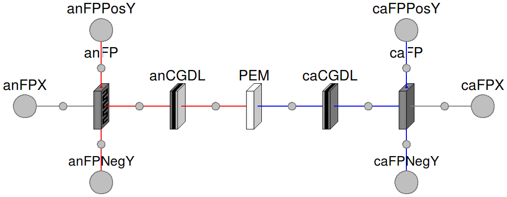

Table of Contents
- User's Guide
- Blocks
- Conditions
- Assemblies
- Regions
- Subregions
- Phases
- Species
- Connectors
- Characteristics
- Units
- Quantities
- Utilities
- Icons
Download
- Latest version (**Empty; please check back soon or contact kdavies4 at gmail.com.)

| Name | Description |
|---|---|
| Examples | |
| Single-cell PEMFC | |
| Cell model with integrated catalyst and gas diffusion layers |
 FCSys.Assemblies.Cells.Cell
FCSys.Assemblies.Cells.Cell

This is a model of a single-cell proton exchange membrane fuel cell (PEMFC). An overview of a PEMFC is given in the top-level documentation of FCSys.
Extends from FCSys.Icons.Cell (Icon for a cell).
| Type | Name | Default | Description |
|---|---|---|---|
| Geometry | |||
| Length | L_y[:] | {U.m} | Lengths along the channel [l] |
| Length | L_z[:] | {5*U.mm} | Lengths across the channel [l] |
| Layers | |||
| AnFP | anFP | redeclare Regions.AnFPs.AnFP… | Anode flow plate |
| AnGDL | anGDL | redeclare Regions.AnGDLs.AnG… | Anode gas diffusion layer |
| AnCL | anCL | redeclare Regions.AnCLs.AnCL… | Anode catalyst layer |
| PEM | PEM | redeclare Regions.PEMs.PEM P… | Proton exchange membrane |
| CaCL | caCL | redeclare Regions.CaCLs.CaCL… | Cathode catalyst layer |
| CaGDL | caGDL | redeclare Regions.CaGDLs.CaG… | Cathode gas diffusion layer |
| CaFP | caFP | redeclare Regions.CaFPs.CaFP… | Cathode flow plate |
| Type | Name | Description |
|---|---|---|
| FaceBus | an[n_y, n_z] | Interface with the anode end plate |
| FaceBus | ca[n_y, n_z] | Interface with the cathode end plate |
| FaceBus | anNegative[anFP.n_x, n_z] | Negative anode fluid port |
| FaceBus | caNegative[caFP.n_x, n_z] | Negative cathode fluid port |
| FaceBus | anPositive[anFP.n_x, n_z] | Positive anode fluid port |
| FaceBus | caPositive[caFP.n_x, n_z] | Positive cathode fluid port |
model Cell "Single-cell PEMFC" import FCSys.Utilities.average; extends FCSys.Icons.Cell; // **Add overall parameter to include or exclude liquid H2O. // Geometric parameters parameter Q.Length L_y[:]={U.m} "Lengths along the channel"; parameter Q.Length L_z[:]={5*U.mm} "Lengths across the channel"; final parameter Integer n_y=size(L_y, 1) "Number of subregions along the channel"; final parameter Integer n_z=size(L_z, 1) "Number of subregions across the channel"; Connectors.FaceBus an[n_y, n_z] "Interface with the anode end plate"; Connectors.FaceBus ca[n_y, n_z] "Interface with the cathode end plate"; Connectors.FaceBus anNegative[anFP.n_x, n_z] "Negative anode fluid port"; Connectors.FaceBus caNegative[caFP.n_x, n_z] "Negative cathode fluid port"; Connectors.FaceBus anPositive[anFP.n_x, n_z] "Positive anode fluid port"; Connectors.FaceBus caPositive[caFP.n_x, n_z] "Positive cathode fluid port"; replaceable Regions.AnFPs.AnFP anFP(final L_y=L_y, final L_z=L_z) "Anode flow plate"; replaceable Regions.AnGDLs.AnGDL anGDL(final L_y=L_y, final L_z=L_z) "Anode gas diffusion layer"; replaceable Regions.AnCLs.AnCL anCL(final L_y=L_y, final L_z=L_z) "Anode catalyst layer"; replaceable Regions.PEMs.PEM PEM(final L_y=L_y, final L_z=L_z) "Proton exchange membrane"; replaceable Regions.CaCLs.CaCL caCL(final L_y=L_y, final L_z=L_z) "Cathode catalyst layer"; replaceable Regions.CaGDLs.CaGDL caGDL(final L_y=L_y, final L_z=L_z) "Cathode gas diffusion layer"; replaceable Regions.CaFPs.CaFP caFP(final L_y=L_y, final L_z=L_z) "Cathode flow plate"; protected outer Conditions.Environment environment "Environmental conditions"; equation // Internal connections (between layers) connect(anFP.xPositive, anGDL.xNegative); connect(anGDL.xPositive, anCL.xNegative); connect(anCL.xPositive, PEM.xNegative); connect(PEM.xPositive, caCL.xNegative); connect(caCL.xPositive, caGDL.xNegative); connect(caGDL.xPositive, caFP.xNegative); // External connections connect(an, anFP.xNegative); connect(anFP.yNegative, anNegative); connect(anFP.yPositive, anPositive); connect(caFP.xPositive, ca); connect(caFP.yNegative, caNegative); connect(caFP.yPositive, caPositive); end Cell;
FCSys.Assemblies.Cells.SimpleCell
This is a model of a single-cell proton exchange membrane fuel cell (PEMFC). The catalyst layers and gas diffusion layers are integrated on each side to reduce the complexity of the model. An overview of a PEMFC is given in the top-level documentation of FCSys.
Extends from FCSys.Icons.Cell (Icon for a cell).
| Type | Name | Default | Description |
|---|---|---|---|
| Geometry | |||
| Length | L_y[:] | {U.m} | Lengths along the channel [l] |
| Length | L_z[:] | {5*U.mm} | Lengths across the channel [l] |
| Layers | |||
| AnFP | anFP | redeclare Regions.AnFPs.AnFP… | Anode flow plate |
| AnCGDL | anCGDL | Anode catalyst and gas diffusion layer | |
| PEM | PEM | redeclare Regions.PEMs.PEM P… | Proton exchange membrane |
| CaCGDL | caCGDL | Cathode catalyst and gas diffusion layer | |
| CaFP | caFP | redeclare Regions.CaFPs.CaFP… | Cathode flow plate |
| Type | Name | Description |
|---|---|---|
| FaceBus | an[n_y, n_z] | Interface with the anode end plate |
| FaceBus | ca[n_y, n_z] | Interface with the cathode end plate |
| FaceBus | anNegative[anFP.n_x, n_z] | Negative anode fluid port |
| FaceBus | caNegative[caFP.n_x, n_z] | Negative cathode fluid port |
| FaceBus | anPositive[anFP.n_x, n_z] | Positive anode fluid port |
| FaceBus | caPositive[caFP.n_x, n_z] | Positive cathode fluid port |
model SimpleCell "Cell model with integrated catalyst and gas diffusion layers" extends FCSys.Icons.Cell; // **Add overall parameter to include or exclude liquid H2O. // Geometric parameters parameter Q.Length L_y[:]={U.m} "Lengths along the channel"; parameter Q.Length L_z[:]={5*U.mm} "Lengths across the channel"; final parameter Integer n_y=size(L_y, 1) "Number of subregions along the channel"; final parameter Integer n_z=size(L_z, 1) "Number of subregions across the channel"; Connectors.FaceBus an[n_y, n_z] "Interface with the anode end plate"; Connectors.FaceBus ca[n_y, n_z] "Interface with the cathode end plate"; Connectors.FaceBus anNegative[anFP.n_x, n_z] "Negative anode fluid port"; Connectors.FaceBus caNegative[caFP.n_x, n_z] "Negative cathode fluid port"; Connectors.FaceBus anPositive[anFP.n_x, n_z] "Positive anode fluid port"; Connectors.FaceBus caPositive[caFP.n_x, n_z] "Positive cathode fluid port"; replaceable Regions.AnFPs.AnFP anFP(final L_y=L_y, final L_z=L_z) "Anode flow plate"; FCSys.Regions.AnCLs.AnCGDL anCGDL(final L_y=L_y, final L_z=L_z) "Anode catalyst and gas diffusion layer"; replaceable Regions.PEMs.PEM PEM(final L_y=L_y, final L_z=L_z) "Proton exchange membrane"; FCSys.Regions.CaCLs.CaCGDL caCGDL(final L_y=L_y, final L_z=L_z) "Cathode catalyst and gas diffusion layer"; replaceable Regions.CaFPs.CaFP caFP(final L_y=L_y, final L_z=L_z) "Cathode flow plate"; protected outer Conditions.Environment environment "Environmental conditions"; equation // Internal connections (between layers) connect(anFP.xPositive, anCGDL.xNegative); connect(anCGDL.xPositive, PEM.xNegative); connect(PEM.xPositive, caCGDL.xNegative); connect(caCGDL.xPositive, caFP.xNegative); // External connections connect(an, anFP.xNegative); connect(anFP.yNegative, anNegative); connect(anFP.yPositive, anPositive); connect(caFP.xPositive, ca); connect(caFP.yNegative, caNegative); connect(caFP.yPositive, caPositive); end SimpleCell;